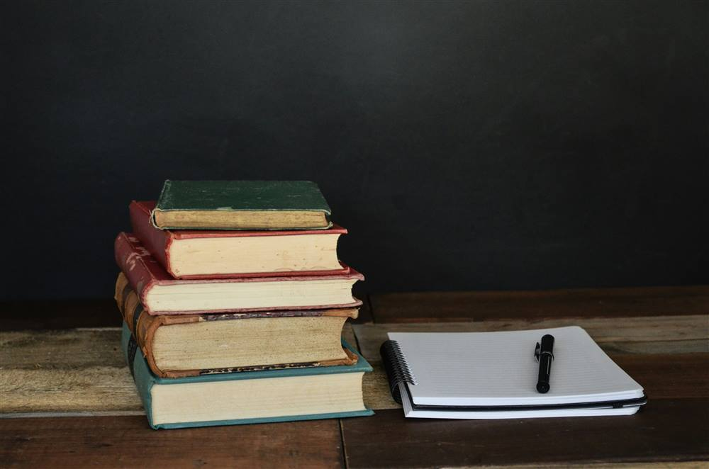

Profil
Ruang untuk tumbuh.
Yayasan Umik Sopiah adalah yayasan pendidikan yang mengelola sekolah jenjang SD dan SMP.
Tentang yayasan
Kami percaya belajar berjalan baik ketika anak merasa aman, dipahami, dan didampingi. Karena itu kami ingin sekolah menjadi tempat yang hangat bagi anak dan jelas bagi orang tua.
Logo kami menggambarkan hal yang sama: buku terbuka sebagai pendidikan, dan daun sebagai proses tumbuh.

Nilai
Tiga hal yang kami pegang.
Hangat
Anak disambut dengan ramah, dan keluarga merasa dilibatkan.
Jelas
Informasi disampaikan dengan bahasa sederhana dan terbuka.
Bertumbuh
Kemajuan dilihat dari langkah kecil yang konsisten.
Ingin mengenal lebih dekat?
Tanyakan apa pun yang Bapak/Ibu perlukan.